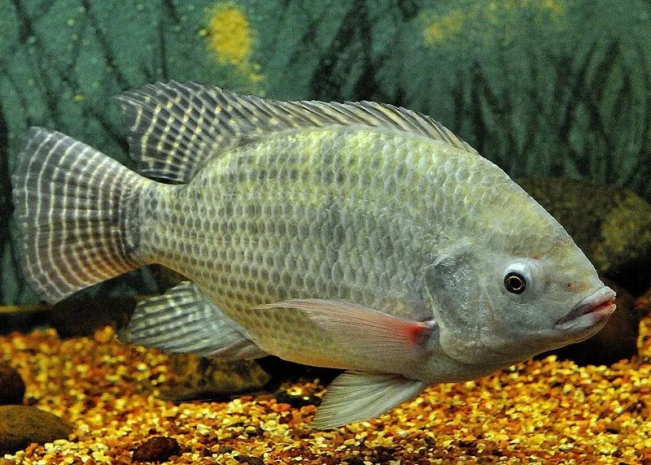
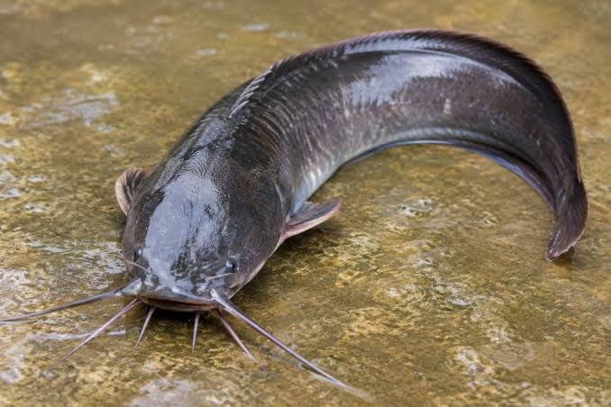

Home
Home
Tempat para fishing mania berkumpul!
Ikan Air Tawar
Ikan air tawar adalah jenis ikan yang hidup di air tawar di kolam, sungai, dan danau dengan salinitas air 0,05%. Sebanyak 41 persen dari jumlah spesies ikan diketahui hidup di air tawar. Dalam banyak hal, lingkungan air tawar berbeda dengan lingkungan air laut, dan yang paling membedakan adalah tingkat salinitasnya. Untuk bertahan di air tawar, ikan membutuhkan adaptasi fisiologis yang bertujuan menjaga keseimbangan konsentrasi ion dalam tubuh. Hal ini karena spesiasi yang cepat yang menjadikan habitat yang terpencar menjadi mungkin untuk ditinggali.

Ikan nila adalah sejenis ikan konsumsi air tawar. Ikan ini diperkenalkan dari Afrika, tepatnya Afrika bagian timur, pada tahun 1969, dan kini menjadi ikan peliharaan yang populer di kolam-kolam air tawar di Indonesia sekaligus hama di setiap sungai dan danau Indonesia. Nama ilmiahnya adalah Oreochromis niloticus, dan dalam bahasa Inggris dikenal sebagai Nile Tilapia.

Lele atau ikan keli, adalah suatu keluarga ikan yang hidup di air tawar. Lele mudah dikenali karena tubuhnya yang licin, agak pipih memanjang, serta memiliki dua kumis panjang yang mencuat dari sekitar bagian mulutnya. Ikan ini banyak dikonsumsi karena rasanya yang enak jika dimasak dan biasanya digoreng atau dibakar.
.jpg)
Gurami atau gurame (Osphronemus goramy) adalah sejenis ikan air tawar yang populer sebagai ikan konsumsi di Asia Tenggara dan Asia Selatan. Di samping itu, gurami juga sering dipelihara dalam akuarium. Selain dikenal dengan nama gurami, ikan ini juga memiliki beberapa sebutan lokal seperti gurami (Sd.); grameh (Jw.); kaloi (My.); Kalui (Mng.); ikan kali (Plg.), dan lain-lain.
.jpg)
Ikan gabus atau juga disebut Gabus lokal adalah sejenis ikan pemangsa yang hidup di air tawar. kan ini dijuluki gabus karena dagingnya putih, lembut dan tebal seperti gabus. Selain daripada itu, ikan ini tidak memiliki tulang-tulang halus. Nama ilmiahnya adalah Channa striata.
Ikan Air Asin atau Payau
Ikan laut atau Ikan air asin adalah spesies ikan yang hidup di dalam air laut. Berbeda dengan ikan air tawar yang menghendaki lingkungan hidup dengan kadar garam yang lebih rendah daripada kadar garam dalam cairan tubuhnya, ikan laut dapat menyesuaikan diri terhadap lingkungan yang memiliki kadar garam yang lebih tinggi dibandingkan dengan kadar garam dalam cairan tubuhnya. Ikan laut mempunyai cairan tubuh berkadar garam lebih rendah dibandingkan kadar garam di lingkungannya.
.jpg)
Tuna adalah ikan laut pelagik yang termasuk tribus Thunnini, terdiri dari beberapa spesies dari famili skombride, terutama genus Thunnus. Ikan ini adalah perenang andal (pernah diukur mencapai 77 km/jam). Tidak seperti kebanyakan ikan yang memiliki daging berwarna putih, daging tuna berwarna merah muda sampai merah tua. Hal ini karena otot tuna lebih banyak mengandung myoglobin daripada ikan lainnya. Beberapa spesies tuna yang lebih besar, seperti tuna sirip biru Atlantik (Thunnus thynnus), dapat menaikkan suhu darahnya di atas suhu air dengan aktivitas ototnya. Hal ini menyebabkan mereka dapat hidup di air yang lebih dingin dan dapat bertahan dalam kondisi yang beragam. Kebanyakan bertubuh besar, tuna adalah ikan yang memiliki nilai komersial tinggi.
.jpg)
Kerapu adalah ikan anggota dari subfamili Epinephelinae, famili Serranidae dalam ordo Perciformes. Tidak semua anggota Epinephelinae disebut kerapu, karena anggotanya kadang disebut kod karang, hind, dan siakap. Subfamili ini terdiri atas 15 genus dan 159 spesies, 110 di antaranya ditemukan di perairan Indo-Pasifik. Dalam bahasa Inggris, "kerapu" disebut grouper atau groper, yang dipercaya berasal dari nama garoupa, yang diperkirakan dari bahasa Portugis. Ada yang mengatakan bahwa nama Portugis ini berasal dari salah satu bahasa asli Amerika Selatan.
.jpg)
Barakuda adalah ikan dalam kelas Actinopterygii yang dikenal berwujud menyeramkan dan berukuran tubuh besar, yaitu sampai panjang enam kaki dan lebar satu kaki. Tubuhnya panjang dan ditutupi oleh sisik yang halus. Ikan ini dapat ditemukan di samudra tropis dan subtropis di seluruh dunia. Semua spesies barakuda masuk dalam genus Sphyraena, dan genus tersebut juga merupakan satu-satunya genus dalam famili Sphyraenidae.
.jpg)
Ikan pari adalah kelompok ikan pari , sejenis ikan bertulang rawan . Mereka diklasifikasikan dalam subordo Myliobatoidei dari ordo Myliobatiformes dan terdiri dari sebelas famili Hexatrygonidae (pari enam insang), Gymnuridae (pari kupu-kupu), Plesiobatidae (pari perairan dalam), Urolophidae (pari bulat), Myliobatidae (pari elang), Aetobatidae (pari elang pelagis), Mobulidae (pari manta dan pari setan), Rhinopteridae (pari hidung sapi), Dasyatidae (pari ekor cambuk), Potamotrygonidae (pari sungai), dan Urotrygonidae (pari bulat Amerika). Terdapat sekitar 220 spesies pari yang diketahui yang dikelompokkan ke dalam 29 genus.